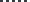
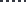
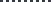
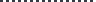
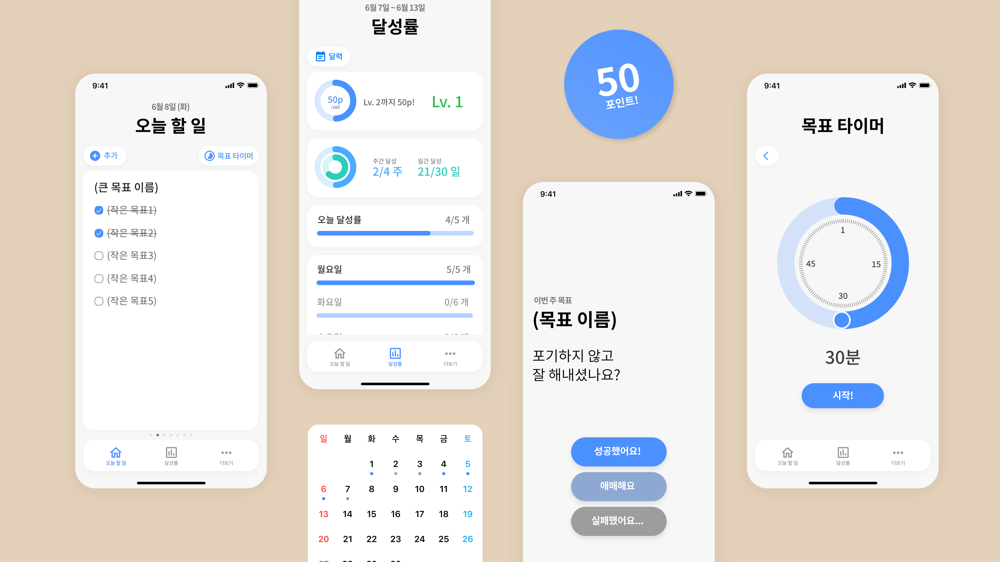

KDMHS 20TH
DEPT. OF WEB PROGRAMMING
AJOU UNIV. ’24
DEPT. OF DIGITAL MEDIA
QUICK LOOK

-
NOW
디지털미디어학과 3학년 2학기 재학

-
2026.AUG.
뭐지 뉴스레터 워크샵

-
2025.JAN.
중앙사진동아리 A.SA.
제작부장 활동 (~26. 6.)
-
2024.MAR.
중앙사진동아리 A.SA. 입부
아주대학교 24학번
디지털미디어학과 입학
-
2023.NOV.
뭐지 뉴스레터 리디자인 (~12월)
-
2022.JUN.
뭐지 뉴스레터 활동 시작
-
2021.MAR.
한국디지털미디어고등학교 20기
웹프로그래밍과 입학
개발자의 꿈
초등학생 때 “엔트리” 블럭코딩으로
처음 소프트웨어라는 것을 알게된 이후,
저는 초중등 모두 개발자라는 꿈을 가졌습니다.
생활기록부의 장래희망 란에는,
- 프로그래머
- 앱개발자
- 시스템프로그래머
말은 모두 다르지만 소프트웨어 엔지니어라는 꿈은
항상 같았습니다.
이후 꿈을 이어가고자 IT특성화로 유명한
한국디지털미디어고등학교에 진학했습니다.

디자인에 입문
진학한 고등학교에서 앱/웹개발 동아리에 들어가
Adobe Xd로 처음 디자인을 접했습니다.
원하는 UI를 직접 디자인하는 것에 흥미를 느끼고
이를 계기로 Figma, Adobe Illustrator를
독학하였습니다.

혼자 배운 디자인툴을 사용해
학교에서 학습하는 웹개발 과제를
효율적으로 마무리한 경험이 있습니다.

현재
개발자와 디자이너 사이를 고민하는 시기를 거쳐,
지금은 HCI 연구에 관심을 가지게 되어
해당 분야로 나아가려고 노력하고 있습니다.
모빌리티, 안경 등 새로운 방식의 컴퓨터와
사람이 원활하게 상호작용할 수 있도록
더 많이 공부하고 연구할 계획입니다.
OPENS AN EXTERNAL NOTION PAGE
AJOU UNIV. ’24
DEPT. OF DIGITAL MEDIA
SCHOOL
leejh17025@ajou.ac.kr
PERSONAL
contact@leejaehan.com
ETC.
GITHUB
@lee-jaehan
INSTAGRAM
@woone_two